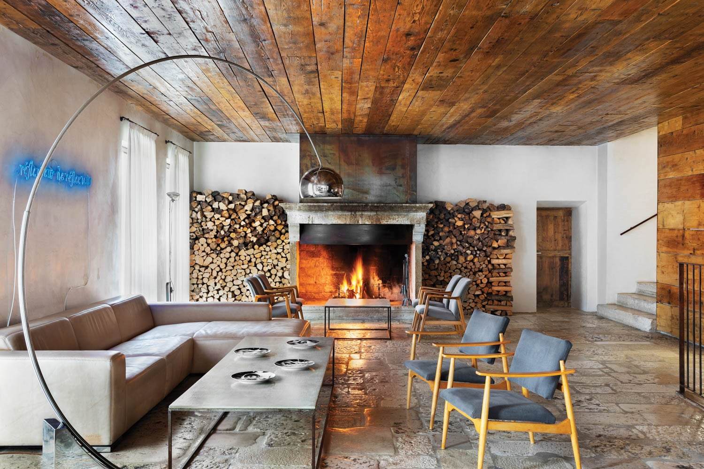
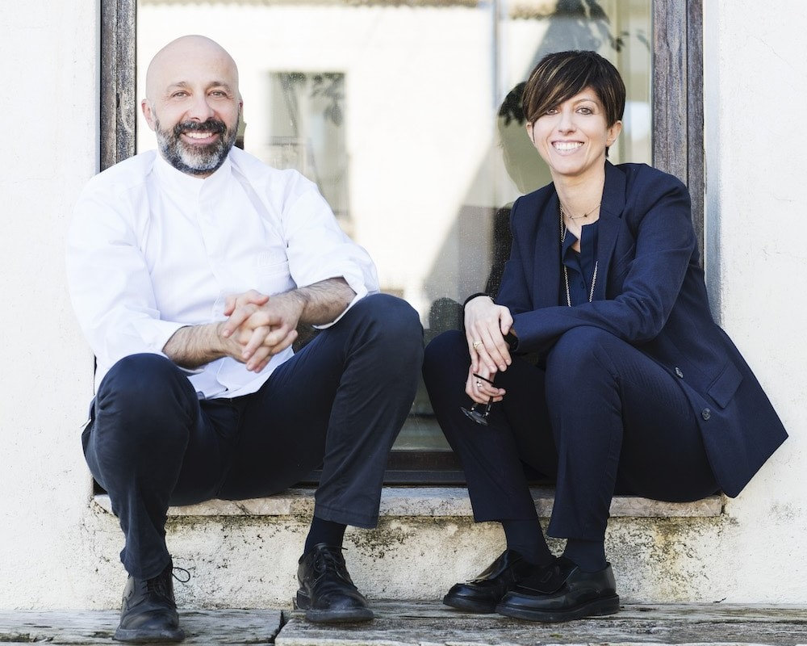
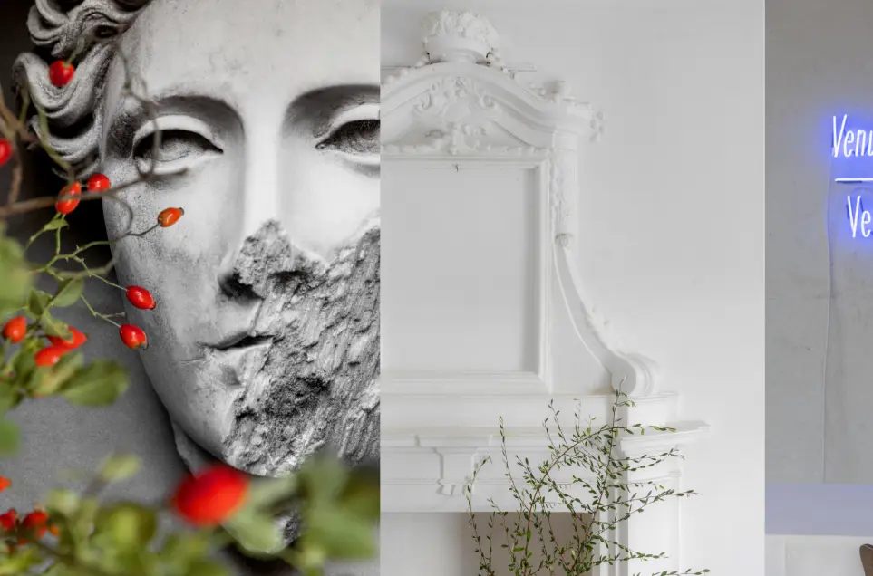
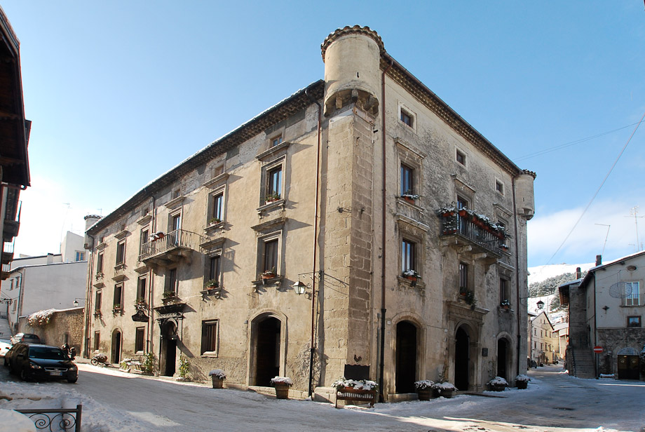
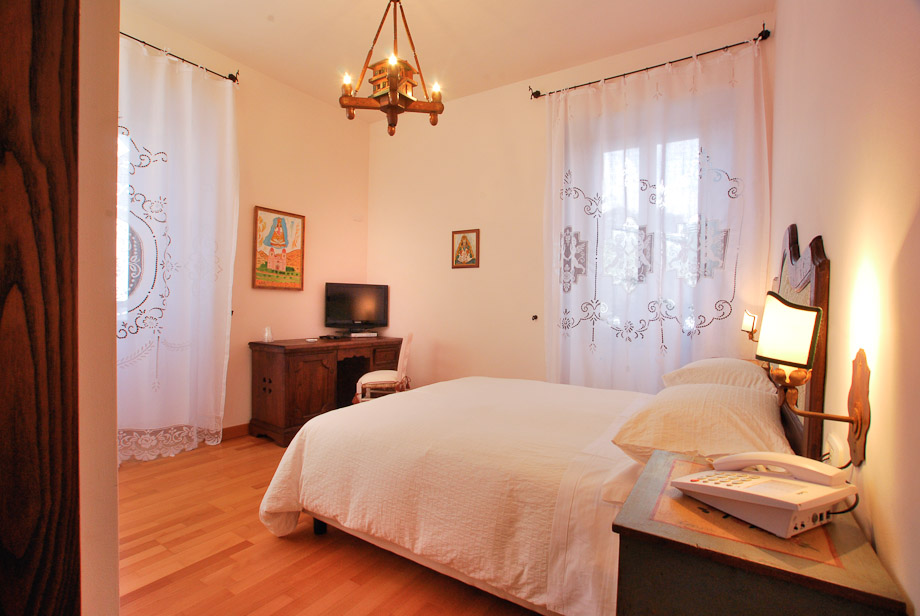
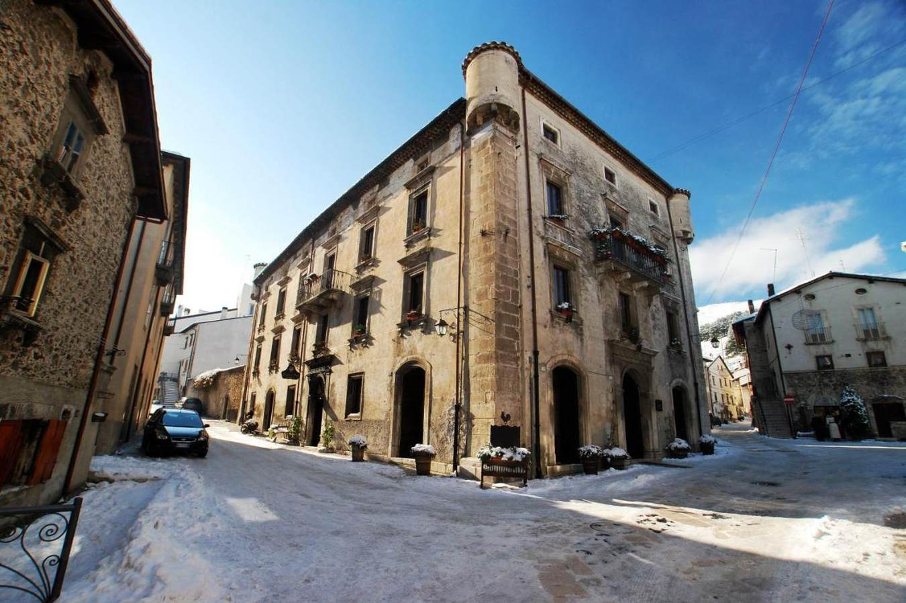

Where to sleep, when you are coming for Reale.
Seven dimore — a 16th-century monastery on the chef's own estate, an 18th-century communal washhouse, a noble palazzo in one of Italy's most beautiful villages, and four more — each within a short taxi of Niko Romito's three-Michelin-star table.
Book Casadonna first. It is the on-site 16th-century monastery wing of Reale, ten rooms only, and the table is a one-minute walk from the bed [5]. If it is sold out — or your weekend falls inside the 16 March–9 June 2026 closure — the strongest character alternatives are in-town heritage (Il Lavatoio, Il Tiglio) or, if you want to make the village itself part of the trip, Hotel Le Torri in Palazzo Grilli, seventeen minutes by car.
Geography, in one paragraph.
Reale sits at Piana Santa Liberata, the rural plateau ≈1 km from the historic centre of Castel di Sangro [6]. The mountain villages of Roccaraso and Pescocostanzo sit comfortably inside taxi range. Pre-book the return — small-town night supply is thin and tasting menus run late.
The estate, on the property
Chapter I · Plate ICasadonna
Piana Santa Liberata, on-site at Reale
Restored from a 16th-century monastery on a six-hectare estate with experimental vineyards, mountain-honey bee colonies and the Accademia Niko Romito on the same grounds [1]. Interiors mix white stone and raw concrete with art by Ettore Spalletti and Joseph Kosuth [21]; the register is "minimalist chic, unpretentious" [22]. Ten rooms, the table a minute away, ranked #1 of Castel di Sangro guest houses at 4.6/5 over 184 reviews [5].
Closed 16 Mar – 9 Jun 2026 — if your Saturday falls inside, Reale isn't serving anyway [4]
via interiordesign.net
via hiddenist-journeys
via nikoromito.comIn town, among the cobbles
Chapter II · Plates II–VDimora Storica 18th-c washhouse
Il Lavatoio Dimora Storica
Castel di Sangro, top of the historic centre
A 19th-century-style restoration built around a preserved 18th-century communal washhouse at the head of Castel di Sangro's old town, 200 m from the cathedral and main square [7]. Thirteen individually styled rooms with valley views.
Reviews flag inconsistent bed comfort and a good-but-not-transcendent breakfast [7]Il Tiglio 19th-c townhouse
Hotel Il Tiglio
Castel di Sangro, central
An early-19th-century townhouse done in travertine, copper and wrought iron, run hands-on by Mario and Massimo. Ten rooms, a 9.4 guest rating, and a host who personally handles restaurant recommendations and bookings [8].
Adults-only — a feature for a couple's dinner trip, a bug if the kids are comingB&B Il Postale
Castel di Sangro, Piazza Plebiscito (main square)
The building once housed Castel di Sangro's old post office; restored and opened as a B&B in 2006 directly on the main square [9]. Booking score 8.6/10; breakfast is homemade jams, cheeses, butter and honey [10].
Some guests note no A/C and a minibar that won't keep water cold — relevant in summer [10]Il Vecchio Pollaio Working family farm
Agriturismo Il Vecchio Pollaio
2 km out of Castel di Sangro · countryside
A working family agriturismo 2.2 km from town with nine en-suite rooms, garden, outdoor pool and free bikes [11]. Rated 9.5/10 on Booking [12] — the right call if you want birdsong and a farm breakfast, and the table at Reale is the only "fine" item on the weekend.
To Pescocostanzo, eighteen kilometres up.
One of I Borghi più Belli d'Italia. Treat the weekend as a village trip, not a restaurant trip — and the dinner becomes a 17-minute taxi each way [18].
Hotel Le Torri
Pescocostanzo, Via del Vallone
Palazzo Grilli, the historic noble residence of the Grilli family of Pescocostanzo, occupied as a 4-star with 22 renovated rooms in the upper floors [13] [23]. Guest rating 8.1; from ~€185/night [14]. Round-trip taxi to Reale runs roughly €40–€60 on top of the room rate [20] — factor it in.
Some reviewers flag tired bathrooms and weak soundproofing — ask for an upper-floor renovated room [14]
via letorrihotel.it
via letorrihotel.it
via hotel-boutique.itGarnì B&B La Rua
Pescocostanzo, historic centre
Family-run by Luigi, Giuseppe and Elisa in the same historic Pescocostanzo centre as Le Torri [16]. Reviews repeatedly single out breakfast — freshly baked pastries, goat-milk ricotta [17]. Same 17-minute taxi calculus to Reale as Le Torri, at B&B rates [18].
Booking logistics
A Saturday at RealeConfirm the date first
Reale serves Saturday lunch and dinner during the open season; the 2026 closure runs 16 March – 9 June [4]. Confirm your weekend is outside before booking any room.
Then book Casadonna
It sells out months ahead — book it the moment you book the table [1]. If it is gone, fall back to the in-town heritage stays before the village option.
Pre-arrange the return taxi
Reale tastings run 3+ hours; finishing past 23:00 is normal. In-town runs are short, but a Pescocostanzo return at midnight needs a driver lined up in advance [20].